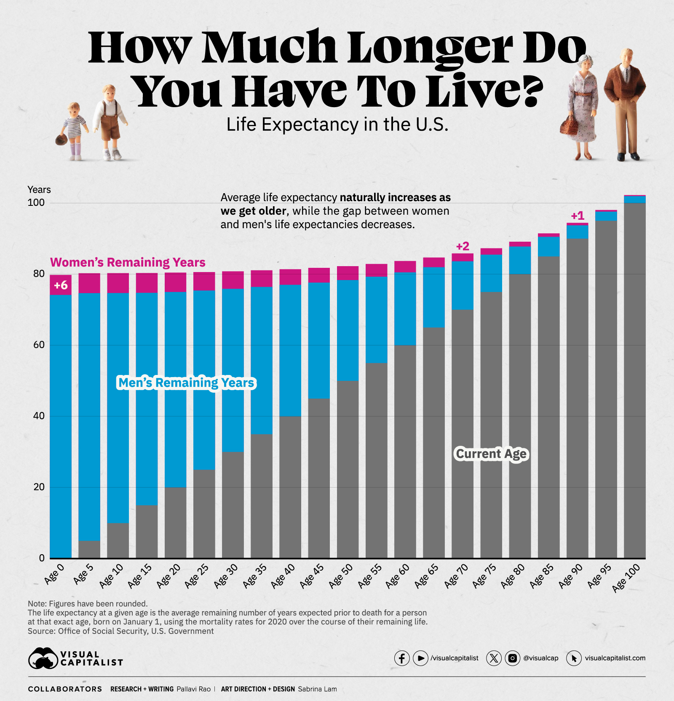
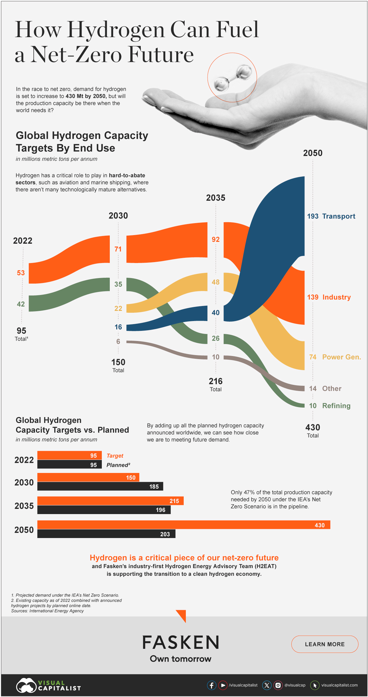

Viz Interpretation and Analysis
- It attempts to share the following information:
- The remaining years to live according to different gender.
- The average life expectancy in the US over age.
- It uses 4 different channels as follow:
- Magnitude Channel:
- "Years" as vertical position channel.
- "Age" as horizontal position channel.
- "Current Age" as area channel.
- Identity Channel:
- "Gender's Remaining Years" as color identity channel.
Possible Viz's Issues
- Data
- Unable to highlight the core information.
- Idiom
- Expressiveness:
- Using 2 channels to represent the same data attribute "age".
- Effectiveness:
- Accuracy: Women's remaining years is not accurately represented.
- Separability: Integrating both women's and men's remaining years in a single bar might create some form of confusion.
Possible Improvement
- Remove the information of the life expectancy in the U.S if the intent is for the users to know how much longer they can live based on their current age.
- Split the chart for different gender to avoid misinterpretation on the women's remaining years.
- Remove the additional channel that represent the "current Age".

Viz Interpretation and Analysis
- It attempts to share the following information:
- The demand of hydrogen over years from different industries.
- The planned supply vs the expected demand.
- First viz uses 3 different channels as follow:
- Magnitude Channel:
- "Years" as horizontal position channel.
- "Hydrogen Demand" as area channel.
- Identity Channel:
- "Industry" as color identity channel.
- Second viz uses 3 different channels as follow:
- Magnitude Channel:
- "Years" as vertical position channel.
- "Hydrogen level" as horizontal position channel.
- Identity Channel:
- "Target vs plan" as color identity channel.
Possible Viz's Issues
- Data
- Unable to highlight the core information.
- Idiom
- Effectiveness:
- Accuracy: The interval in the 'year' channel is not equal.
- Consistency:
- The 'year' channels used in both vizs are not consistent.
Possible Improvement
- Change the title to "Can the supply of Hydrogen meet the demand by 2050?".
- Combine the 2 vizs since the additional information from the second viz is about the planned supply of the hydrogen.
- Avoid using the same color to represent 2 different information in the 2 vizs.